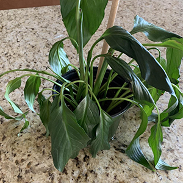

Peace Lily health check
This is the image which will be predicted on by the machine learning model:

Start prediction
Your peace lily is ..
Healthy
Keep up the good work! Your peace lily is in good shape.
Give it another try